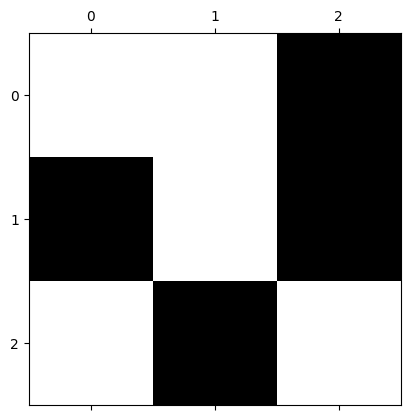
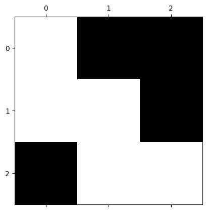

Lab 6: Importance Sampling#
For the class on Monday, February 3rd
A. Random Mazes#
Consider a \(N \times N\) matrix. Each element of the matrix can be either 1 or 0. The value is determined randomly and independently, with a probability \(p\) of being 1, and \(1-p\) of being 0, except for the upper left and lower right corners, which will always be 1.
Think of this matrix as a maze, where 0s present walls and 1s present paths. We call a maze “solvable” if there is a fully connected path (i.e., 1s) from the upper left corner to the lower right corner. Note that one cannot move diagonally in this maze.
The question we want to answer is: Given specific values of \(N\) and \(p\), what is the probability that the maze is solvable?
Below, the first cell defines two functions:
generate_mazegenerates a random maze with \(N=\)side_lengthand \(p=\)path_prob.check_solvablechecks if a maze is solvable.
The second cell generates and displays a 3x3 maze.
In the display, 0s (walls) are represented by black squares and 1s (paths) by white squares.
It also prints out whether the maze is solvable.
Run this cell a few times to see if you agree with check_solvable’s output!
import numpy as np
import scipy.ndimage
import matplotlib.pyplot as plt
from tqdm.notebook import trange
rng = np.random.default_rng()
def generate_maze(side_length, path_prob):
maze = (rng.random(size=(side_length, side_length)) < path_prob)
maze[0,0] = maze[-1,-1] = True
return maze
def check_solvable(maze):
label = scipy.ndimage.label(maze)[0]
return label[0,0] == label[-1,-1]
maze = generate_maze(side_length=3, path_prob=0.5)
plt.matshow(maze, cmap="gray", vmin=0, vmax=1)
print("Maze is solvable?", check_solvable(maze))
Maze is solvable? False

Now, we are going to generate 20,000 random mazes, and calculate the fraction of them that are solvable. This fraction is then an estimate of the probability that a maze is solvable in the case of \(N=3\) and \(p=0.5\).
# Simple sampling
n_mazes = 20000
side_length = 3
solvable_count = 0
for _ in trange(n_mazes):
maze = generate_maze(side_length=side_length, path_prob=0.5)
if check_solvable(maze):
solvable_count += 1
print("Fraction of solvable mazes:", solvable_count / n_mazes)
Fraction of solvable mazes: 0.3936
The fraction you got from the cell above should be around 51/128 = 0.3984375. Run the cell a few times to see the range of results you get.
This true value (51/128) comes from listing all the possible 3x3 mazes (there are 128 possibilities – why?) and counting the number of solvable ones. While this process may sound tedious, it is rather simple for a computer to do.
However, what if the matrix is 50x50 instead?
📝 Questions:
How many possible 50x50 mazes are there? (Remember that the upper left and lower right corners are always 1s.)
When we generated 20,000 random mazes, roughly what fraction of all possible mazes did we sample?
In the cell above, change
side_length=50(i.e., for a 50x50 matrix). Run the cell a few times, and describe the result you get. Does the result make sense to you? Why or why not?
// Add your answer here
B. Importance Sampling#
There are so many possible configurations for a 50x50 maze, and only a small fraction of those are solvable. If we “fairly” draw random configurations, the chance we get a solvable maze is extremely low.
If we can somehow include more solvable configurations in our samples, we may be able to get a better estimate of the solvable probability.
When we draw the configurations, we can tune up the value of \(p\) (probability of an element being 1). This way, there will be more 1s in the matrix, and the chance of the maze being solvable will increase. But then we need to correct for the fact that we are not drawing from the original distribution (\(p=0.5\)).
The true probability of a maze being solvable is given by:
where \(C_i\) is a specific configuration of the maze, \(n_\text{conf.}\) is the total number of possible maze configurations, \(f\) is 1 if the maze is solvable and 0 otherwise, and \(P(C_i | p=0.5)\) is the probability of drawing \(C_i\) from the distribution with \(p=0.5\).
Compare this formula with our simulation code above, you will notice two differences. First, we didn’t draw all possible configurations when running our simulation, but only a small fraction of them. Hence, our result was not the true value of \(P_{\text{solvable},\, p=0.5}\), but just an estimator for it. Second, the factor \(P(C_i | p=0.5)\) is not explicitly included in our code, because when running the simulation, the drawing process itself already accounts for \(P(C_i | p=0.5)\) (why?).
Now, we can rewrite the formula above: $\( P_{\text{solvable},\, p=0.5} = \frac{1}{n_\text{conf.}} \sum_{i=1}^{n_\text{conf.}} \left[ f(C_i) \frac{P(C_i | p=0.5)}{P(C_i | p=p')} \right] P(C_i | p=p'). \)$
Note that these two formulas are equivalent, but the second one gives us an interesting idea. We can run a simulation where the drawing process uses \(p=p'\), which can differ from 0.5. As long as we weight \(f(C_i)\) by \(\frac{P(C_i | p=0.5)}{P(C_i | p=p')}\), we can still obtain an estimator for \( P_{\text{solvable},\, p=0.5} \), in the case of \(p=0.5\), not \(p=p'\)!
Let’s first do some calculations in the \(N=3\) case since the small number is easier to handle.
📝 Questions:
Run the cell below. Let \(C_i\) denote that configuration. Find the value of P(C_i | p=0.5).
Find the value of \(P(C_i | p=p')\) (express your answer in terms of \(p'\)).
Find the ratio \( P(C_i | p=0.5) / P(C_i | p=p')\).
// Add your answer here
plt.matshow([[1,0,0], [1,1,0], [0,1,1]], cmap="gray", vmin=0, vmax=1);

Let now run some simulations with the importance sampling method. The overall setup is the same as before, but each time when we draw a solvable maze, we need to collect the ratio \( P(C_i | p=0.5) / P(C_i | p=p')\), not just 1.
Since we will need to use that ratio a lot, we define a function calc_log_prob_diff.
This function calculates the log of the ratio \( P(C_i | p=0.5) / P(C_i | p=p')\).
Here we calculate in logarithm to avoid numerical precision issues.,
because when the matrix size gets large, the probability of any configuration will be very small.
However, when we collect those ratios, we cannot add them in the log space directly.
We need to first exponentiate them, then do the addition, and finally take the log again.
NumPy provides a function np.logaddexp that does this without loss of numerical precision.
Let’s now run the following cells. Take a look at the code to see if it’s consistent with our derivation earlier.
def calc_log_prob_diff(maze, path_prob_p, path_prob_q):
paths = np.count_nonzero(maze)
walls = maze.size - paths
return (
(paths - 2) * (np.log(path_prob_p) - np.log(path_prob_q))
+ walls * (np.log1p(-path_prob_p) - np.log1p(-path_prob_q))
)
# Importance sampling
n_mazes = 20000
side_length = 3
altered_path_prob = 0.7
log_total_weight = -np.inf
for _ in trange(n_mazes):
maze = generate_maze(side_length=side_length, path_prob=altered_path_prob)
if check_solvable(maze):
log_weight = calc_log_prob_diff(maze, 0.5, altered_path_prob)
log_total_weight = np.logaddexp(log_total_weight, log_weight)
print("Estimated solvable prob. =", np.exp((log_total_weight - np.log(n_mazes))))
Estimated solvable prob. = 0.4054907775734588
🚀 Tasks and Questions:
In the cell above, keep
side_length=3but change the value ofaltered_path_prob. Describe how the result changes.In the cell above, set
side_length=50andaltered_path_prob=0.6. Do you get a nonzero result now?In the cell above, keep
side_length=50but change the value ofaltered_path_prob. Describe how the result changes.
// Add your answer here
C. Final Remarks: Percolation#
This lab is actually closely related to percolation theory, an important topic in statistical physics and probability theory.
When the value of \(p\) is lower than some critical value \(p_\text{crit}\), the maze we considered will have an exponentially low probability of being solvable.
In fact, even with importance sampling, it is still hard to get an accurate estimate of the solvable probability, due to the critical behavior in the system. While we use this example to illustrate importance sampling, for actual percolation problems, more sophisticated methods are needed to get accurate results.
Oh, what is critical behavior? You may ask. Well, it turns out the that, when \(N\) is large, the probability of a maze being solvable has a sharp transition around \(p_\text{crit}\). Run the following cells and check out the resulting plot.
We will see another example of critical behavior in the next lab, where we will study the Ising model.
# This cell may take a while to run!
from tqdm.notebook import tqdm
n_mazes = 20000
side_length = 50
path_probs = np.linspace(0, 1, 51)
p_crit = 0.592746
log_p_solvable = [-np.inf] # for path_prob == 0
# Use importance sampling for path_probs < p_crit
path_probs_small = path_probs[(path_probs > 0) & (path_probs < p_crit)]
log_total_weights = np.empty_like(path_probs_small)
log_total_weights[:] = -np.inf
for _ in range(n_mazes):
maze = generate_maze(side_length=side_length, path_prob=p_crit)
if check_solvable(maze):
log_weights = calc_log_prob_diff(maze, path_probs_small, p_crit)
log_total_weights = np.logaddexp(log_total_weights, log_weights)
log_p_solvable.extend(log_total_weights - np.log(n_mazes))
# Use simple sampling for path_probs >= p_crit
for path_prob in tqdm(path_probs[(path_probs >= p_crit) & (path_probs < 1)]):
solvable_count = 0
for _ in range(n_mazes):
maze = generate_maze(side_length=side_length, path_prob=path_prob)
if check_solvable(maze):
solvable_count += 1
log_p_solvable.append(np.log(solvable_count / n_mazes))
log_p_solvable.append(0) # for path_prob == 1
log_p_solvable = np.array(log_p_solvable)
fig, ax = plt.subplots(dpi=150)
ax.plot(path_probs, np.exp(log_p_solvable))
ax.set_xlabel("$p$ (Probability of matrix element being 1)")
ax.set_ylabel("Probability of maze being solvable")
ax.grid(True)
ax.axvline(p_crit, color="C3", linestyle="--", lw=1, label="Critical $p$");
Tip
Submit your notebook
Follow these steps when you complete this lab and are ready to submit your work to Canvas:
Check that all your text answers, plots, and code are all properly displayed in this notebook.
Run the cell below.
Download the resulting HTML file
06.htmland then upload it to the corresponding assignment on Canvas.
!jupyter nbconvert --to html --embed-images 06.ipynb